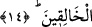

kanâat, devedeki yumuşak huyluluk, kedideki tevâzu, köpekteki vefâ, kargadaki
erkencilik, şahin ve kaplumbağadaki himmet ve bunların dışındaki diğer övülen sıfatlar
gibi. Allah onların hepsini özellikleri ve tabiatları ile bir araya getirip insanın, yâni
Âdem (a.s.)’ın çamuruna yerleştirmiştir.
13. Sonra onu sağlam bir karargâhta nutfe haline getirdik.
“Sonra onu” yâni Âdem (a.s.)’dan farklı olan ferdleri îtibâriyle insan cinsini “sağlam
bir karargâhta” rahimde “nutfe haline getirdik.” onu nutfeden yarattık.
Bazıları şöyle demiştir: “Onu” yâni neslini, demektir. Buna göre insandan murad,
çamurdan süzülüp çıkarılan bir özden yaratılan Âdem (a.s.)’dır.
“
” saf su demektir. Bu kelimeyle erkeğin suyu ifâde edilir. Yani biz Âdemin
zürriyeti ve oğullarının soyunu menî haline koyduk ki, bu erkeklerin sulbünden çıkar.
Rahme, karargâh denilmesi mübalağa içindir.
“
” sağlam, korunaklı demektir. Bu, rahmin, içinde karar kılanın sıfatıyla vasf
edilmesidir.
Yâni onu sağlam bir karargâhta, yani anne rahminde onu beyaz bir nutfe olarak kırk
gün koruyup muhafaza ettik.
14. Sonra nutfeyi alaka (aşılanmış yumurta) yaptık. Peşinden, alakayı, bir
parçacık et haline soktuk; bu bir parçacık eti kemiklere (iskelete) çevirdik; bu
kemikleri etle kapladık. Sonra onu başka bir yaratışla insan haline getirdik. Yapıp-
yaratanların en güzeli olan Allah pek yücedir.
“Sonra” beyaz nutfeyi kırmızı alaka hâline getirerek “nutfeyi alaka (aşılanmış
yumurta) yaptık.”
Râğıb der ki: “
”, donmuş kandır. Çocuğun kendisinden meydana geldiği “
” da
o kökten gelir.
“Peşinden, alakayı, bir parçacık et haline soktuk.” “
” Bir çiğnem et parçasıdır.
Yâni, biz onu açık seçik ve belli olmayan bir et parçası haline getirdik. Sonra o kanı
ağızda çiğnenen bir parça et hâline getirdik, kemiksiz olarak bir kırk gün daha tuttuk.
“Bu bir parçacık eti” yâni onun çoğunu kırk üç gün sonra sertleştirerek “kemiklere